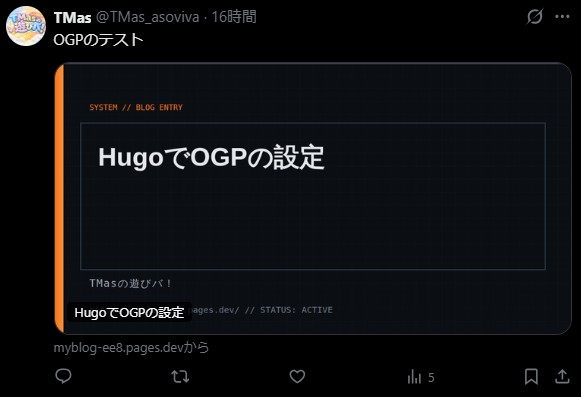
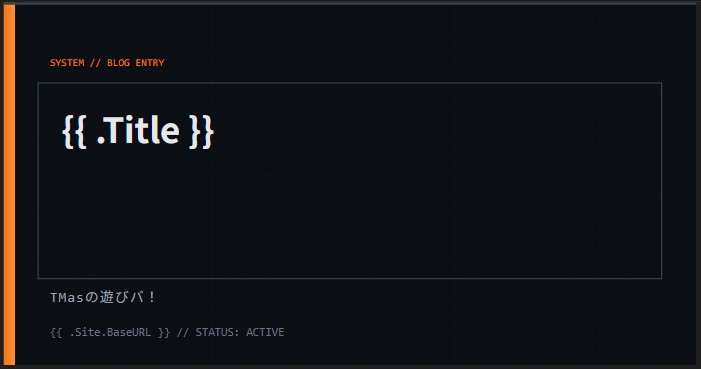
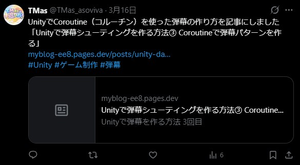

はじめに
ブログの記事をSNSでシェアしたときに、 サムネイル画像が表示されると見た目の印象が大きく変わります。
特にX（旧Twitter）では、 画像の有無でクリック率がかなり変わると言われています。
今回は、静的サイトジェネレーターであるHugo（PaperModテーマ）を使って、 記事ごとにOGP画像を自動生成する仕組みを構築しました。
SVGをベースにした柔軟なデザインと、 自動化による運用のしやすさを両立した構成になっています。
一度構築してしまえば、記事を追加するとOGP画像が自動生成されるため、 運用コストを増やさずに見た目を強化できます。
今回の内容を実行すると、 X（旧Twitter）に投稿したときの見た目はこのようになります。

OGPとは
OGP（Open Graph Protocol）とは、 Webページの情報をSNSで正しく表示するための仕組みです。
例えば、記事URLをシェアしたときに以下のような情報が表示されます。
- タイトル
- 説明文
- サムネイル画像
これらはHTML内のmetaタグで指定します（headタグ内に記述）。
<meta property="og:title" content="記事タイトル">
<meta property="og:description" content="記事の説明">
<meta property="og:image" content="画像URL">
この設定がない場合、SNS側が自動で情報を取得しますが、 意図しない表示になることもあります。
そのため、OGPを明示的に設定することが重要です。
SVG画像によるOGPのベースデザインの作成
まずはOGP画像のテンプレートとなるSVGを作成します。
今回は assets/ogp/single.svg に配置しました。
SVGを使うメリットは以下の通りです。
- テキストを動的に差し込める（タイトルなどの自動挿入が可能）
- 解像度に依存しない（高品質）
- 軽量で扱いやすい
見た目にもこだわって以下のSVGテンプレートを作成しました。

<svg width="1200" height="630" xmlns="http://www.w3.org/2000/svg">
<style>
.bg {
fill: #0b0f14;
}
.title {
font-size: 60px;
fill: #e5e7eb;
font-family: 'Noto Sans JP', sans-serif;
font-weight: 700;
}
.site {
font-size: 24px;
fill: #9ca3af;
font-family: monospace;
letter-spacing: 2px;
}
.url {
font-size: 20px;
fill: #6b7280;
font-family: monospace;
}
.label {
font-size: 18px;
fill: #f97316;
font-family: monospace;
}
</style>
<defs>
<!-- アクセント -->
<linearGradient id="accent" x1="0" y1="0" x2="1" y2="0">
<stop offset="0%" stop-color="#f97316"/>
<stop offset="100%" stop-color="#fb923c"/>
</linearGradient>
<!-- 細かいグリッド -->
<pattern id="grid" width="30" height="30" patternUnits="userSpaceOnUse">
<path d="M30 0 L0 0 0 30" fill="none" stroke="#1f2937" stroke-width="1"/>
</pattern>
</defs>
<!-- 背景 -->
<rect width="1200" height="630" class="bg"/>
<rect width="1200" height="630" fill="url(#grid)" opacity="0.3"/>
<!-- 左パネル -->
<rect x="0" y="0" width="20" height="630" fill="url(#accent)"/>
<!-- 上部ライン -->
<rect x="0" y="0" width="1200" height="4" fill="#374151"/>
<!-- UIボックス -->
<rect x="60" y="140" width="1080" height="340"
fill="none" stroke="#374151" stroke-width="2"/>
<!-- コーナー装飾 -->
<line x1="60" y1="140" x2="120" y2="140" stroke="url(#accent)" stroke-width="3"/>
<line x1="60" y1="140" x2="60" y2="200" stroke="url(#accent)" stroke-width="3"/>
<!-- ラベル -->
<text x="80" y="110" class="label">
SYSTEM // BLOG ENTRY
</text>
<!-- サイト名 -->
<text x="80" y="520" class="site">
TMasの遊びバ！
</text>
<!-- タイトル -->
<foreignObject x="100" y="180" width="1000" height="260">
<div xmlns="http://www.w3.org/1999/xhtml"
style="
font-family: 'Noto Sans JP', sans-serif;
font-size: 60px;
font-weight: 700;
color: #e5e7eb;
line-height: 1.3;
word-break: break-word;
">
{{ .Title }}
</div>
</foreignObject>
<!-- 下部ステータス -->
<text x="80" y="580" class="url">
{{ .Site.BaseURL }} // STATUS: ACTIVE
</text>
</svg>
タイトルやサイト名を差し込めるように、以下のようにテンプレート化しておきます。
- {{ .Title }}
- {{ .Site.BaseURL }}
また、foreignObjectを使用して、 タイトルが長い場合に自動で折り返すように設定しています。
※ただし、ImageMagickなど一部のツールではforeignObjectが正しく描画されないため、 環境によってはtext要素で代替する必要があります。
これにより、記事ごとに異なるOGP画像を自動生成できるようになります。
SVGの自動作成
次に、Hugoのテンプレート機能を使ってSVGを自動生成します。
PaperModのテーマではデフォルトでOGPを設定しているので、
無効化するために、空っぽの layouts/partials/templates/opengraph.htmlと
layouts/partials/templates/twitter_cards.htmlを作成します。
これはHugoのルールとしてlayouts/ が themes/ を上書きするというものがあるからです。
そして、自分専用のOGPを設定するためにlayouts/partials/ogp.html を作成します。
{{ if .IsPage }}
{{ with resources.Get "ogp/single.svg" }}
{{ $svg := . | resources.ExecuteAsTemplate (printf "ogp/%s.svg" $.File.BaseFileName) $ }}
{{ $png := replace $svg.Permalink ".svg" ".png" }}
<meta property="og:title" content="{{ $.Title }}">
<meta property="og:description" content="{{ $.Description }}">
<meta property="og:type" content="article">
<meta property="og:url" content="{{ $.Permalink }}">
<meta property="og:image" content="{{ $png }}">
<meta name="twitter:card" content="summary_large_image">
<meta name="twitter:image" content="{{ $png }}">
<meta name="twitter:title" content="{{ $.Title }}">
<meta name="twitter:description" content="{{ $.Description }}">
{{ end }}
{{ end }}
ここでは、resources.ExecuteAsTemplate を利用して、 記事タイトルやサイト情報をSVGテンプレートに埋め込んでいます。
また、次の章でSVGをPNGに変換するため、 imageの場所にはsvgではなくpngを指定するようにしています。
これにより、タイトルなどの情報をブログの記事に埋め込むことができます。
SVGからPNGへの変換
X（旧Twitter）はSVG画像に対応していないため、 OGP画像として使用するにはPNG形式に変換する必要があります。
今回はPythonを使って、 自動でSVGをPNGに変換する仕組みを作成しました。
import sys
from pathlib import Path
CANVAS_WIDTH = 1200
CANVAS_HEIGHT = 630
BG_COLOR = "#0f172a"
SVG_DIR = Path("public/ogp")
PNG_DIR = Path("static/ogp")
def svg_to_png(svg_content: str, output_path: str):
"""PlaywrightでSVGをPNGに変換"""
try:
from playwright.sync_api import sync_playwright
except ImportError:
print("エラー: playwrightがインストールされていません", file=sys.stderr)
sys.exit(1)
html = f"""<!DOCTYPE html>
<html>
<head>
<meta charset="utf-8">
<style>
* {{ margin: 0; padding: 0; }}
body {{ width: {CANVAS_WIDTH}px; height: {CANVAS_HEIGHT}px; overflow: hidden; background: {BG_COLOR}; }}
</style>
</head>
<body>
{svg_content}
</body>
</html>"""
with sync_playwright() as p:
browser = p.chromium.launch()
page = browser.new_page(viewport={"width": CANVAS_WIDTH, "height": CANVAS_HEIGHT})
page.set_content(html)
page.wait_for_timeout(300) # フォント読み込み待機
page.screenshot(path=output_path, clip={
"x": 0, "y": 0,
"width": CANVAS_WIDTH,
"height": CANVAS_HEIGHT
})
browser.close()
def main():
if not SVG_DIR.exists():
print(f"エラー: ディレクトリが見つかりません: {SVG_DIR}", file=sys.stderr)
sys.exit(1)
svg_files = list(SVG_DIR.glob("*.svg"))
if not svg_files:
print(f"SVGファイルが見つかりません: {SVG_DIR}")
return
PNG_DIR.mkdir(parents=True, exist_ok=True)
converted = 0
skipped = 0
for svg_path in sorted(svg_files):
png_path = PNG_DIR / svg_path.with_suffix(".png").name
if png_path.exists():
print(f"スキップ: {png_path.name} (既に存在)")
skipped += 1
continue
print(f"変換中: {svg_path.name} → {png_path.name}")
with open(svg_path, "r", encoding="utf-8") as f:
svg_content = f.read()
svg_to_png(svg_content, str(png_path))
converted += 1
print(f"\n完了: {converted}件変換, {skipped}件スキップ")
if __name__ == "__main__":
main()
Microsoftが開発したブラウザ操作テストのplaywrightを使用して、 SVG画像をブラウザで表示し、 Screenshotを撮ってPNGを保存するようにしています。
public/ogp以下にあるSVGファイルを探索し、 PNGに変換していないSVGファイルを自動変換して、 static/ogp以下に保存することができます。
X（旧Twitter）での変化
OGP設定前は、リンクを投稿してもテキストのみのシンプルな表示でした。
しかし、OGPを設定したことで以下のように変化しました。

特にタイムライン上での目立ち方が大きく変わり、 クリックされやすい状態になったと感じています。
視覚的な情報が増えることで、記事の内容も伝わりやすくなりました。
おわりに
せっかく記事を作ったので、 多くの人に見てもらいたいと思いますよね。
OGPを設定することで、 SNS投稿時に記事を目立たせることができ、 クリック率の向上にもつながる有効な方法だと思います。
ありがとうございました。